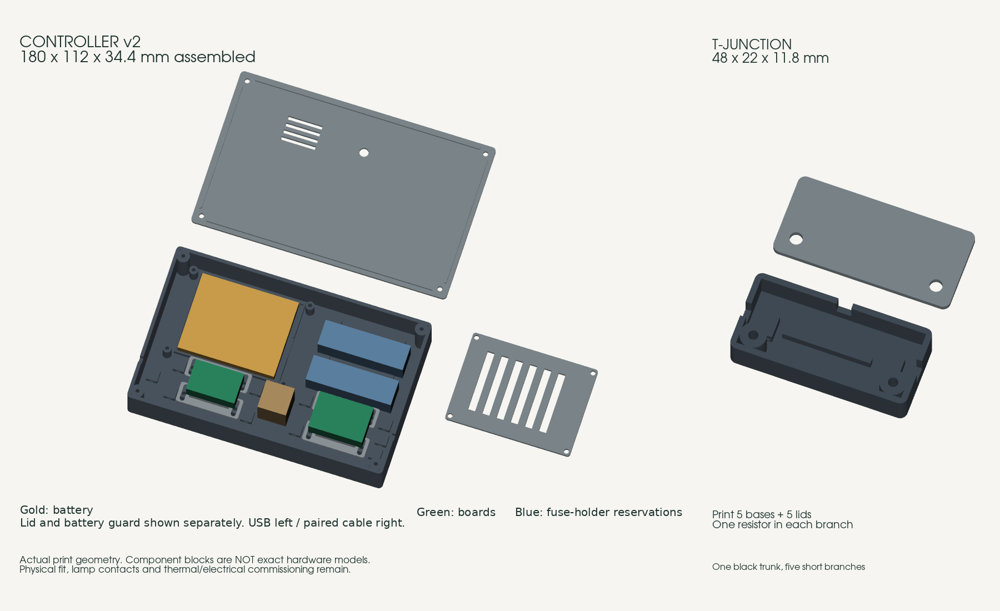

Byggdeler i listen1 577,50 krInkl. full filamentrull og kandidatdelene.
Verktøy hvis alt må kjøpes2 505,90 krEngangskjøp. Bruk eller lån det du har.
Planleggingsbudsjett fra null4 833,40 krVarer 4 083,40 kr + batterireserve 350,00 kr + fraktreserve 400,00 kr.
Med verktøy fra før: 2 327,50 kr inkludert de samme reservene. Uten reserver er varebeløpet for hele basislisten 4 083,40 kr.
Dette er et budsjett, ikke en ferdig levert pris. Batteri, holder og batterisidens vern er ikke valgt. De er dekket av en synlig reserve, ikke satt til 0 kr. Frakten er også en reserve for flere butikker. Lyktene du allerede eier og selve 3D-printeren er ikke med. Kampanjerabatter og strøm til printing er ikke trukket fra eller lagt til.
Reserver er redigerbare planleggingsanslag, ikke innhentede tilbud. Prisene på alle 23 listede varer er lest i nettbutikkene 2026-10-20, inkl. mva. Antall er regnet med: eksempelvis seks kontaktpar à 99 kr = 594 kr. Ekstra loddetinn, skyvelære, vegglader og loddematte er valgfrie og utelatt som standard.
Gjenstår å kjøpe · inkl. valgte reserver4 833,40 krKryss av «har fra før / kjøpt» i listen; beløpet trekkes fra her.
Frakt og batterireserve står separat over. Kontrollboksens kandidatdeler er med i budsjettet, men merket «avvent kjøp». Søk og butikkfilter endrer ikke totalsummen.
01 / PLANEN
En ledning, fem avgreninger.
Lampene kobles parallelt. Hver får samme spenning og sin egen strømbegrensning.
▰USB-lading5 V · eksisterende vegglader
USB →
⏻KontrollboksBatteri / ladekrets avklares
ca. 4,5 V →
⌁Svart ledningsparInntil 5 m langs hyllen
FELLES + OG −
R1 + kontaktLykt 1
R2 + kontaktLykt 2
R3 + kontaktLykt 3
R4 + kontaktLykt 4
R5 + kontaktLykt 5
01
Ryddig bak bøkene
To tynne, svarte ledninger tvinnes lett sammen bak bøkene. Hver korte avgrening føres frem langs lyktens svarte brakett og oppheng, med slakk ved kjedet. T-bokser skjuler skjøtene bak bøkene. En lykt kan kobles fra uten at de andre slukker.
02
Én inn, én ut
Målet er USB-kabel i den ene enden av kontrollboksen og ett svart ledningspar i den andre. En løsning med oppladbart batteri inne i boksen undersøkes, men er ikke ferdig valgt.
03
Batterivalget gjenstår
En vanlig powerbank kan slå seg av ved liten last. Det er ikke funnet en ferdig norsk kjøpsløsning som er tilstrekkelig verifisert. Lade-/omformerkortet fra Elkim er en kandidat, ikke en ferdig batteripakke.
Hva må avklares før kontrollboksen bygges?
Én beskyttet Li-ion-celle med dokumentert tillatt ladestrøm, en holder som faktisk passer cellens lengde, vern på batterisiden og den endelige ladekretsen må velges sammen. Elkim-kortets oppgitte ladestrøm er opptil 1 A. En liten batteripakke med 1 A som absolutt maks er ikke automatisk et egnet valg.
Lastdeling under lading er ikke dokumentert; samtidig lading og lysdrift er derfor ikke en godkjent funksjon. Ladetemperatur, tomgangsforbruk, utgangsspenning og passform må måles før en ferdig monteringsoppskrift publiseres. Den gamle regulatoren kan heller ikke erstattes direkte med en LM2596 på 5 V USB: spenningsmarginen er for liten for 4,5 V ut.
02 / ALT SOM SKAL HANDLES
Fra loddebolt til siste skrue.
Alle kjøpslenker går til norske butikker. Strømforsyningen er ennå ikke en komplett bestillingsliste.
Listen er dimensjonert for 5 lykter, maks. 5 m hovedledning og 0,5 m avgrening per lykt. Kryss av ting som er kjøpt eller finnes fra før — da trekkes de fra beløpet som gjenstår å kjøpe. Totalen er uavhengig av søk og filter. Valgene lagres bare i denne nettleseren.
USB-A med løse ledere etter at pinnesokkelen klippes av. Identifiser +5 V og GND med måling og isoler andre ledere hver for seg. Endelig tilkobling avhenger av valgt ladekrets.
Mål kabeldiameteren før den nye kontrollboksen tegnes ferdig.
1 stk.Norsk butikk
MrSmart ↗79,00 kr totalt1 × 79,00 kr · per stk./settPå lager · sendes fra NorgeKontrollert 2026-10-20 · inkl. mva.
To svarte ledere, lett tvinnet. Oppgitt ytterdiameter 1,1 mm hver. 20 ledermeter gir 10 meter ledningspar; ca. 15 ledermeter brukes i planlagt oppsett, resten er margin.
2 ruller à 10 mNorsk butikk
Kjell & Company ↗98,00 kr totalt2 × 49,00 kr · per rull à 10 mNettlager: 100+ · levering 22.–23. okt.Kontrollert 2026-10-20 · inkl. mva.
Fem avtakbare lamper pluss ett reservepar. Begge kontakthalvdeler følger med, hver med 10 cm / 20 AWG ledning. Ingen krympetang for kontaktpinner nødvendig.
Tykkere kontaktledninger beholdes utenfor de smale kabelutgangene. Skjøt til den tynne svarte ledningen; kontroller polaritet med kontinuitetsmåling.
TX10-hode, Ø5,5 × 2,4 mm. Ti skruer brukes i fem T-bokser. Resten reserveres til kontrollboksen og passformprøver; antallet i ny kontrollboks er ikke fastlagt.
Siden viser også 10 kr / 10 stk. Kontroller at handlekurven tilsvarer 20 skruer totalt. Ingen muttere eller gjengeinnsatser i denne prototypen.
20 skruer totaltNorsk butikk
Motorkondensator ↗20,00 kr totalt20 × 1,00 kr · per skrue300 på lagerKontrollert 2026-10-20 · inkl. mva.
Pakken har 25 svarte 2,5 × 100 mm-strips. Brukes til strekkavlastning i T-boksene og til ledningsføringen. Antall i ny kontrollboks er ikke fastlagt.
Små merker inne i boksene skiller + fra − når begge ledninger er svarte. Egne etiketter kan brukes i stedet. Alle elektriske skjøter isoleres med krympeslange; merketeipen er for identifikasjon.
Svart PLA, 1 kg med spole. Bruk eksisterende egnet filament hvis du har. Forbruket for ny kontrollboks er ikke beregnet.
1 rull / fra førNorsk butikk
Polyalkemi ↗175,00 kr totalt1 × 175,00 kr · per 1 kg med spole20+ på lager · kampanjeprisKontrollert 2026-10-20 · inkl. mva.
Verktøy
06 POSTER
48 W, 230 V og temperaturjustering 160–480 °C. Startpakken har rengjøringssvamp, hjelpende hånd med lupe, pinsett, tang, tinnsuger, loddelisse og 10 g loddetinn.
Bruk holderen til den varme bolten og et varmebestandig underlag. Luft godt ved lodding. Egen tilsvarende stasjon kan brukes.
Måler DC-spenning, lav DC-strøm og kontinuitet. Måleledninger og to AA-batterier følger med. Brukes til å stille regulatoren, måle lampestrøm og kontrollere polaritet.
Ved strømmåling står meteret i serie med lampen, med riktig inngang og område. Ikke mål strøm ved å legge prober direkte over batteriet.
1 stk.Norsk butikk
Kjell & Company ↗599,00 kr totalt1 × 599,00 kr · per stk./settNettlager: 20+ · levering om 2–6 dagerKontrollert 2026-10-20 · inkl. mva.
Område 0,08–10 mm² dekker 0,14 mm²-ledningen. En eksisterende tang kan brukes dersom den faktisk støtter så tynn flertrådet ledning.
1 stk.Norsk butikk
Elektroimportøren ↗599,00 kr totalt1 × 599,00 kr · per stk./sett260+ på lagerKontrollert 2026-10-20 · inkl. mva.
Til å klippe tynn kobberledning, motstandsben og strips. Kan sløyfes hvis du allerede har en egnet liten avbiter eller den medfølgende tangen dekker behovet.
Produktsiden dokumenterer elektronikk-sideavbiter, men lover ikke helt plant snitt (flush cut). Det er ikke nødvendig for disse skjøtene.
1 stk. / fra førNorsk butikk
Bygghjemme ↗60,00 kr totalt1 × 60,00 kr · per stk./settLagervare · normalt 5–10 hverdagerKontrollert 2026-10-20 · inkl. mva.
Inneholder TT10 til de vanlige TX10-skruehodene samt små flate SL1,5 og SL2 til regulatorjustering. Ett sett dekker begge oppgaver.
1 settNorsk butikk
Jula ↗149,00 kr totalt1 × 149,00 kr · per stk./settNettlager: 100+ · levering 3–7 virkedagerKontrollert 2026-10-20 · inkl. mva.
230 V, justerbar 50–600 °C. Bruk moderat varme og beveg luftstrømmen når krympeslangen krympes, før skjøtene legges i plastboksene.
Kjøp bare det som mangler. Disse postene er valgfrie tillegg til startpakken.
VALGFRITT
Linocell 12 W USB-A, 5 V / 2,4 A. En eksisterende 5 V USB-lader kan brukes. Dette er veggladeren til en fremtidig USB-ladekrets; batteriløsningen er ennå ikke ferdig valgt.
Fluxfylt, 100 g. Startpakken har allerede 10 g loddetinn, så denne rullen er valgfri. Kjøp ved behov eller dersom egen loddebolt ikke har egnet tinn.
Ekstra rull ved behovNorsk butikk
Kjell & Company ↗219,90 kr totalt1 × 219,90 kr · per stk./settNettlager: 5+ · levering om 2–6 dagerKontrollert 2026-10-20 · inkl. mva.
VALGFRITT
Til å måle USB-kabel, bryter og prøvens hull. Batteri følger med. Nyttig ved tilpasning, men du kan også prøve de faktiske delene direkte i passformprøven.
Varmebestandig arbeidsunderlag med rom til smådeler. Oppgitt til 480 °C. Bruk eksisterende egnet loddeunderlag hvis du har; legg den varme bolten i holderen.
1 stk. hvis du manglerNorsk butikk
Motorkondensator ↗129,00 kr totalt1 × 129,00 kr · per stk./sett4 på lagerKontrollert 2026-10-20 · inkl. mva.
Kontrollboks · avklares før kjøp
04 POSTER
AVVENT KJØP
Kandidat til USB-lading av én Li-ion-celle og ca. 4,5 V ut til lampene. Butikken oppgir 4,3–27 V justerbar utgang, opptil 1 A ladestrøm og ca. 33 × 24 × 4 mm.
AVVENT KJØP: komplett batteripakke, beskyttelse og lading/drift er ikke ferdig kontrollert. Underspenningsvern og lastdeling er ikke dokumentert. Ikke bruk dette som et ferdig koblingsskjema.
Kandidat som utskiftbart vern på positiv utgang til ledningsnettet. Erstatning for den importerte selvtilbakestillende sikringen.
AVVENT KJØP: endelig sikringsverdi må bekreftes mot målt totalstrøm og oppstart. Dette er ikke vern eller laderegulering for selve batteriet.
1 pakke à 10 stk.Norsk butikk
Motorkondensator ↗49,00 kr totalt1 × 49,00 kr · per pakke à 10 stk.3 pakker på lagerKontrollert 2026-10-20 · inkl. mva.
AVVENT KJØP
Ledningsmontert holder for glassikringen over. Butikken oppgir 25 cm total ledningslengde og 0,129 mm² ledere.
AVVENT KJØP: ytre kroppsmål er ikke publisert; ny kontrollboks må dimensjoneres etter holderen.
1 stk.Norsk butikk
Motorkondensator ↗9,00 kr totalt1 × 9,00 kr · per stk./sett13 på lagerKontrollert 2026-10-20 · inkl. mva.
Ingen treff. Prøv et annet søk eller vis alle butikker.
Sjekket 20. oktober 2026. Pris og lager kan endres; endelig frakt og totalpris vises i kassen. Ingen ordre er lagt inn. Batteri, batteriholder og batterisidens vern mangler fortsatt. Delene merket «avvent kjøp» er kandidater som må avklares sammen før bestilling.
03 / PRINTDELER
T-bokser nå. Kontrollboks senere.
Den nye batteri- og ladeløsningen trenger en ny kontrollboks. V1 er trukket tilbake som byggeanbefaling.
Avgreningene bruker fortsatt ett gjennomgående ledningspar og én kort ledning til hver lykt. T-bunn og lokk er geometrisk kontrollert, men ikke fysisk printet eller prøvd med de faktiske ledningene. Print ett sett før fem.
T-boks: 48 × 22 × 11,8 mm samlet, to M3 × 8-skruer per boks. Startprofil: 0,20 mm lag, fire vegger, 15–20 % fyll. Kontroller kabelåpninger og skruegrep på én prøve.
Arkiv: tidligere CAD v1 — ikke for de nye delene
IKKE PRINT V1-KONTROLLBOKSEN FOR DEN REVIDERTE HANDLELISTEN. Arkivet er beholdt som designhistorikk. Det viser de tidligere importdelene, ikke Elkim-kortet, den nye bryteren eller et internt batteri. Kollisjons- og meshkontrollene under gjelder bare gammel geometri; de dokumenterer ingen kompatibilitet med de nye kandidatene.
03 / PRINT SELV
To bokser. Fem geometrifiler.
Én kontrollboks og fem T-bokser. Begynn med en liten passformprøve.

Faktisk CAD · lokk vist separat
Dra for å rotere · rull / klyp for zoom · velg en del under. Visningen viser geometrien; bruk STL-filen i sliceren.
STL + STEP + KILDEKODE
En liten byggepakke, klar for første prøving.
Kontrollboks: 110 × 58 × 38,4 mm T-boks: 48 × 22 × 11,8 mm
Svart PLA eller PETG. Sett av ca. 140 g inkludert prøve og margin. Mengden er et geometrisk anslag, ikke en slicermåling.
0,20 mm laghøyde4 vegger5 topp-/bunnlag15–20 % fyllAv støtter
Startverdier for sliceren. Alle filer er i mm. Bunnene printes med bunnen ned. Kontroller de små broene ved tie-festene i sliceren. Ingen del er fysisk printet eller passformtestet ennå; ingen ferdig G-code eller bekreftet printtid er inkludert.
Hva er kontrollert, og hva må prøves fysisk?
Hver av de fem delene har én sammenhengende solid, lukket mesh og positivt volum. CAD viser ingen kollisjon mellom lokk/bunn eller komponentenes referansevolumer og boksen. Beregnet klaring fra bryter til gulv er 10,4 mm før ledninger.
Fysisk passform, bryterens klips, skruenes grep, kabelstrekkavlastning, innvendig ledningsføring, varme og elektrisk funksjon gjenstår. Print prøven først. Kabelhullene er 5,5 mm for USB-ledningen og 4 mm for ledningsparet; tre løse ender gjennom før lodding. Boksen har kabelhull, ikke ferdige USB-kontakter.
Referansesammenstillingen inneholder forenklede komponentvolumer. Den skal ikke printes som én del.
04 / FRA DELER TIL LYS
Bygg én. Så bygger vi resten.
Ja, dette prosjektet trenger en loddebolt. Ferdige kontaktledninger gjør at vi slipper en egen krympetang for kontaktpinner.
01
Kontroller én faktisk lykt
Selger oppgir tre AG3/LR41-celler, nominelt 4,5 V. Åpne én lykt og identifiser batterikontakter, eventuell motstand og elektronikk. Mål original strøm med ferske celler, med multimeteret i serie. Ikke legg strømmåleren direkte over batteriene.
02
Avklar strømforsyningen før bygging
Batteri, holder, ladestrøm og beskyttelse må passe sammen. Deretter tegnes kontrollboksen rundt de valgte delene. Ingen komplett koblingsoppskrift for kandidatkortet er publisert ennå.
03
Lag det ryddige ledningsnettet
Én lett tvinnet svart ledningspar går bak bøkene. Hver lykt får sin egen korte avgrening og avtakbare kontakt. Isoler forskjøvede skjøter enkeltvis med krympeslange. Ikke koble ekstern strøm til en lykt med batteriene i.
04
Prøv én lampe før alle fem
Når en egnet regulert forsyning er klar, begynner prøven ved ca. 4,5 V med 1 kΩ i lampens positive gren. Endelig motstandsverdi bestemmes ut fra faktisk elektronikk, målt strøm og lysstyrke. Fysisk passform, temperatur og driftstid må testes før plassering mellom bøker.
Dette er fortsatt uferdig: komplett norsk batteri-/ladeløsning, revidert kontrollboks, fysisk passform og elektrisk test. Verktøyene og ledningsdelene har norske kjøpslenker; kandidatene til kontrollboksen er ikke klare til bestilling.
05 / GRUNNLAGET
Produktet og dokumentasjonen.
Fotoet er kontrollert mot produktbildet i den opprinnelige Etsy-bestillingen. Kjøpslisten bruker norske butikker. Utenlandske lenker her er teknisk dokumentasjon, ikke kjøpsanbefalinger.